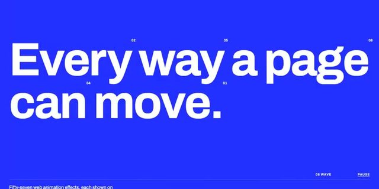
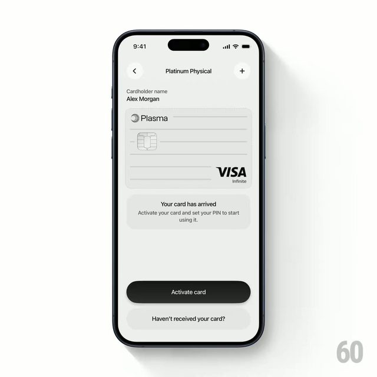
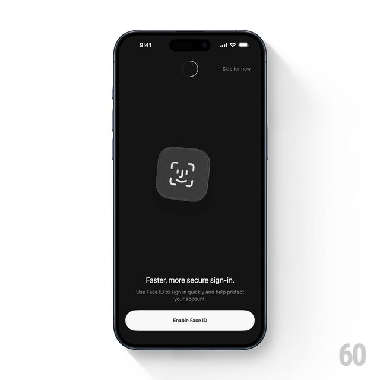
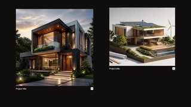
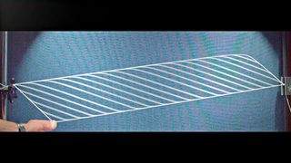
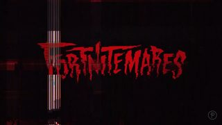

点封面在页面里播放（Vimeo / YouTube / X 需要代理；Vimeo 若没自动开始，再点一下播放键）。觉得好就点「喜欢」，有想法就写在下面的框里保存，我每天出日报前会读，存进偏好和审美库；会多找同类，但每天仍保持类型分散。
目录 01 How do microSD Cards Store 2 TB in such a TINY space?02 "MOTION PLUS DESIGN NEW YORK" Opening Titles03 American Horror Story 第 13 季片头（AHS13_MT）04 Museum of Motion（57 种网页动效合集）05 Sonicare「Good Night Care」06 Plasma 银行卡激活动效07 refraction effects（wabi App 折射效果）08 Tron: Ares × GMUNK —「Finding Eve」09 Meta VR Glasses10 Ouais.－ 看完剔除（15 条）拆 细拆：Branch Education microSD
01 3D质感 知识讲解
How do microSD Cards Store 2 TB in such a TINY space?
Branch Education · YouTube 08-21（超过 30 天） 【看过视频】
原片 6 分 07 秒，完整看过，细拆见文末
好在哪 一张 microSD 卡在黑底上被一层层拆开：外壳、铜色线路、两片紫绿渐变的 NAND 芯片像千层饼一样浮起来分开。镜头再往下钻，芯片变成一整块金色长条，侧面标一根竖线「200 Layers」。标注字都是细白字或荧光绿，贴在物体旁边可借 讲硬件内部结构时，用 Three.js 把零件做成一层层的薄片，沿同一个方向拉开；每拆一层就在旁边贴一个小标签，标签颜色全片只用一种。细拆见文末
展开全文
02 片头片尾 剪辑节奏
"MOTION PLUS DESIGN NEW YORK" Opening Titles
Yeti Pictures · Vimeo 09-17（超过 30 天） 【看过画面（抽帧）】
81 秒全片已下载
好在哪 整片黑白，只有很硬的顶光：一排红绿灯、出租车顶灯牌上写着日期「26/09」、堆成山的自行车、倒在街上的自由女神火炬。讲者名字用很小的白字放在画面一角，不抢画面。最后黑底一排赞助商小 logo 收尾可借 系列视频片头可以只用黑白加一盏顶光，靠物体剪影撑画面；名字、日期这类信息直接做进场景里（比如灯牌），比另外叠字幕更有质感
展开全文
03 片头片尾 字体版式
American Horror Story 第 13 季片头（AHS13_MT）
Prologue Films · Vimeo 10-05 【看过画面（抽帧）】
64 秒全片已下载
好在哪 棕褐色调，雕像、旧书、星形火圈、带数字的老式表盘轮流出现；演员名用细长的复古展示字居中摆放。中间突然插进一个黑底社交帖子界面「Triskaidekaphobia is the fear of the number 13」，旧东西里插一下现代界面。字体未识别（复古新艺术风格展示字体）可借 片头全片只用一种色调，名字永远居中、同一字号，观众就会把注意力放在背景物体上；中间插一个现代 UI 截图，能把老题材一下拉回当下
展开全文
04 字体版式 代码动画
Museum of Motion（57 种网页动效合集）
John Polacek（Codrops） · Codrops 10-26 【看过画面（抽帧）】

Codrops ↗ 6 秒官方预览已下载
好在哪 纯蓝底上一句白色粗体大字「Every way a page can move.」，字旁边散着 01、03、05 这样的小编号；底部一排小字目录「01 MASK / 02 STAGGER / 03 SLIDE / 08 WAVE」。整个站把 57 种文字和页面动效一个个单独展示，都是 GSAP 写的可借 可以直接打开 Demo 当文字动效菜单挑：遮罩、错开、滑入、波浪这些都能搬进 Remotion；蓝底白字加小编号的版式，也适合做章节标题卡
展开全文
05 3D质感 知识讲解
Sonicare「Good Night Care」
MakeMake Design & Animation · Vimeo 10-05 【看过画面（抽帧）】
35 秒全片已下载
好在哪 前半段钻进牙缝里：紫蓝色的牙龈像起伏的山地，细菌是一团团彩色小颗粒，一道细光束从上往下扫。接着切黑底，只有一行小白字「Manual brushing leaves 50% of bacteria behind」。后半段换成暖粉色泡沫冲刷牙面，最后落到人睡觉的实拍可借 讲「看不见的问题」可以分三步：微观 3D 画面先让人看到问题，黑底一行数字说清多严重，再换暖色画面给答案；冷色讲问题、暖色讲答案
展开全文
06 UI动效 转场
Plasma 银行卡激活动效
60fps · X 10-28 【看过画面（抽帧）】

X ↗ 5.8 秒全片已下载
好在哪 手机上一张银色 VISA 卡从表单里浮起来，翻到屏幕上方变成「Activate your card」的卡面，下面弹出数字键盘；每输一位，卡上就多一个格子。输完卡片再滑到底部，界面换成「Set your card PIN」。全程灰白，只有卡的金属反光可借 界面换步骤时，让同一个物体（这里是卡）一直留在画面里换位置，而不是整页切走；讲操作流程的视频，用一个主物体串起每一步就很顺
展开全文
07 UI动效 代码动画
refraction effects（wabi App 折射效果）
60fps · X 10-27 【看过画面（抽帧）】

X ↗ 原帖 3 段视频，只下载、看了第 1 段
好在哪 黑色界面上两个 App 图标叠在一起（白色图标和 Gmail），前面那个像一块玻璃，挪动时后面的图标透过它被扭曲、放大，边缘有一圈折射光。原帖有 3 段，这里下载的是第 1 段（5 秒）可借 讲「两个东西连接」时，让一个元素像玻璃一样压在另一个上面；Three.js 里用 MeshPhysicalMaterial 的 transmission 就能做出这种折射
展开全文
08 UI动效 剪辑节奏
Tron: Ares × GMUNK —「Finding Eve」
GMUNK · Vimeo 10-07 【看过画面（抽帧）】
87 秒全片已下载
好在哪 电影《创：战纪》里的界面设计片段：全片只用红色和黑色，画面碎成成千上万张小图拼成的马赛克墙，中间穿插红框数据面板、城市点阵地图和扫描线。人脸特写和数据画面来回快切，最后又落回人脸可借 讲「AI 在海量数据里找一个东西」这类画面，可以把很多小图拼成一面墙，用一个红框锁定目标；全片只用一种颜色，信息再多也不乱
展开全文
09 3D质感 字体版式
Meta VR Glasses
FutureDeluxe · Vimeo 09-29（超过 30 天） 【看过画面（抽帧）】
86 秒全片已下载
好在哪 暖棕色调，从黑底里打光照出一只镜片的弧面反光，正中一行很小的字「INTRODUCING Meta VR Glasses」。中间有个很好看的镜头：一排半透明磨砂按键浮在木桌上；还有瞳孔里映出 App 图标，旁边小字「LOOK TO NAVIGATE」。功能名都只用一行小字，放在画面角落可借 产品功能一条一条讲时，每个功能只配一个画面加一行小字，字永远比画面小；用眼睛倒影来表示「看一眼就能操作」，是很省事的视觉比喻
展开全文
10 实物动画 剪辑节奏
Ouais.
Della Miranda · Vimeo Staff Pick（10 月） 【看过画面（抽帧）】
原片 3 分 35 秒，只下载、看了前 2 分钟
好在哪 定格动画，人偶穿着毛线织的毛衣，场景是粉色瓷砖的小浴室。镜头一会儿是嘴唇大特写、涂口红的手，一会儿是正上方俯拍的整间浴室，还有天花板吊扇、马桶的主观视角。颜色只有粉、灰绿和米白可借 剪辑节奏上值得学：大特写和正俯拍来回切，一个小空间也能剪出变化；全片限定三种颜色，毛线、瓷砖这种有纹理的材质让画面一看就是「手做的」
展开全文
看完剔除（15 条） Yeti Pictures · 卡通 3D 体育广告，颜色太满太吵，和「克制」不搭
Sarofsky · 3D 大鹅角色广告，画面没有特别可借的手法
average friends × Bill Plympton · 手绘彩铅风 MV，很有个性但太跳，和讲解视频距离远

Jesper Landberg（Codrops） · 网页翻页效果还行，但示例图是 AI 风格的房子，画面不精致

minutephysics · 白板手绘加实拍，minutephysics 昨天刚推过，而且是 7 月的旧片

Prologue · 只能嵌入播放，视频没下载成功，只看了封面；和第 3 条同一家 Prologue，先不放
PolyMatter · 大部分是素材实拍，只有少量数字图形，而且是 7 月的旧片
今日细拆 · 第 1 条
一个镜头从卡片钻到纳米 【看过视频】（完整看过） 6 分 07 秒全片完整看过。Branch Education 讲「指甲盖大的卡怎么存 2TB」：前 35 秒在真实客厅里讲数量，之后全片待在一个深灰色的空间里，只靠镜头往里钻，一层层讲到电子怎么被关在存储单元里
结构：先讲大，再一路钻到小 0:00–0:35 开头放在写实的客厅里。2TB 有多大，不讲数字，直接给东西看：0:06 一个鞋盒装满 microSD 卡，0:22 整个房间堆满几百万张 0:35 一刀硬切到深灰色空间，只剩一张卡浮在中间。之后到片尾都待在这个空间里 0:43–1:00 卡沿竖直方向炸开成一层层；1:01 外壳这些不相关的零件掉出画面，只剩存储芯片 1:28 镜头一口气快速推进芯片表面，穿过去变成纳米尺度的一片金色柱子 1:51 镜头再钻进一个存储单元的侧面，切开看到里面关住电子的结构 4:30–4:38 拆解倒放：外壳和封胶掉回来，重新拼成一张卡 4:39–4:46 回顾：完整的卡上开出几个发蓝光的圆形放大镜，把外面的卡和里面的各层连起来 节奏：几乎不剪，靠镜头走 开头客厅部分是正常剪辑，5 到 10 秒切一次 0:35 以后硬切几乎没有了。镜头一直在慢慢绕、慢慢平移 换层级不靠剪，靠一下又快又猛的推镜头 高亮几乎不停：旁白说到哪个零件，哪个就亮 2 到 4 秒。比如 1:06 NAND 芯片浮起来发光，3:22 台阶状的连线亮成绿色 转场：爆炸拆解和穿透推进 拆解只沿竖直方向，每层间距一样，先加速再减速，最后停在那里轻轻悬浮 0:59 拆开的层里突然掉进来一个三明治，是个小玩笑，让观众笑一下 1:28 镜头加速冲向芯片的金属表面，表面纹理淡出，变成立体的金色柱子 4:50 同样的穿透推进又用了一次：从一页印刷杂志里钻出金色柱子 文字 干净的无衬线字，大部分是白色。字体未识别（看着接近 Roboto / Helvetica 一类） 标签浮在三维空间里、贴着物体，淡入或擦入；很小的零件用细引线连过去 补充信息固定放在右上角，用半透明的小白字：0:02 片头署名，0:09 鞋盒能装多少的算式，1:31 说明为了看清楚拿掉了绝缘层 颜色：深灰底，只有一种荧光绿 底色是深炭灰到黑；材质都是有光泽的写实质感 芯片表面是紫绿变色的金属光（0:37），连线是铜色，存储阵列是金色 唯一的强调色是发光的荧光绿，只用来标「现在讲的这个」：1:42 绿色括号「200 Layers」，1:57 绿色「100 nm」，2:08 一条绿色扫描线，3:22 发光的数据路径 怎么讲清尺寸 三维的尺寸括号：带刻度的线先自己画出来，再出文字，比如 1:18、1:41 的「47 Layers」「72 000 Cells」 1:17 一根三维的头发掉进来，躺在 38 微米的芯片旁边，大小一比就懂 Mika 可以怎么用 Three.js / Remotion 做（这部分是做法建议，不是原片用的工具） 竖直爆炸：每层按序号算目标高度，用缓出或 spring() 动过去，序号越大的层晚一点出发，间距保持一样 尺寸括号：用线段画括号和刻度，靠 drawRange 让线一点点画出来；文字用 CSS2DRenderer 做成网页标签，永远朝向镜头，字也清楚 荧光绿高亮：被讲到的零件设 emissive 绿色，加 UnrealBloomPass，发光强度跟着旁白从 0 拉到 2 以上，讲完再降回去 放到 AI 科普里怎么用 讲「模型里面是什么」很合适：先用一个日常的东西把规模讲出来（比如参数量能装满几个房间），再切进深色空间，一层层往里钻
全片只留一种高亮色，每次只亮正在讲的那一层，右上角小字放补充说明，画面主体不被打断
看原片 ↗
信源：Vimeo、Stash、Codrops、YouTube、X。全程只读浏览，没有点赞、关注、评论或转发。